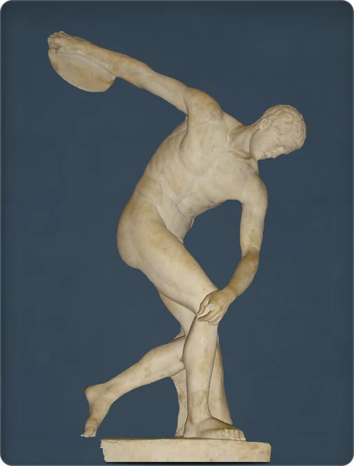

← Retour à la collection
Discobole

L’instant qui précède le lancer
L’athlète retient son mouvement juste avant le lancer du disque. Cette copie romaine en marbre reprend un bronze grec aujourd’hui perdu, attribué à Myron au Ve siècle av. J.-C. Le torse se plie tandis que le bras décrit un large arc. La tête a été mal orientée lors d’une restauration : elle devrait se tourner vers le disque.
IIe siècle ap. J.-C. · marbre · British Museum, Londres · inv. 1805,0703.43
Notice : British Museum →
Source complémentaire : Musée d’archéologie classique de Cambridge
Crédit photographique
Photo : Valerio Perticone / Wikimedia Commons · CC BY-SA 3.0 · fond modifié
Licence de l’image modifiée : CC BY-SA 3.0